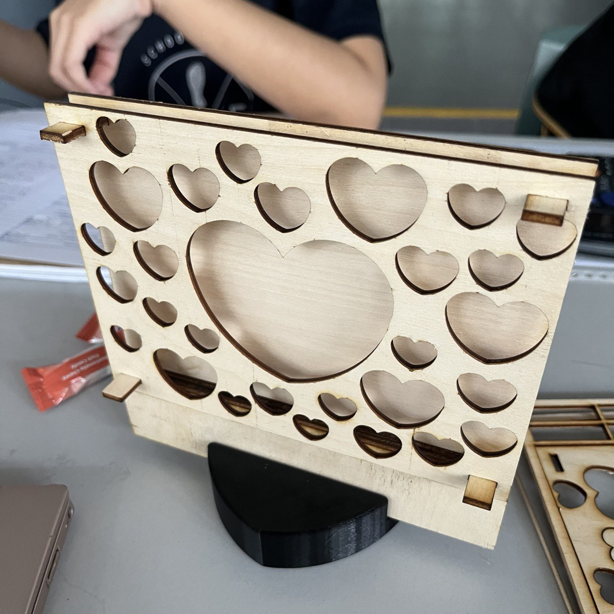
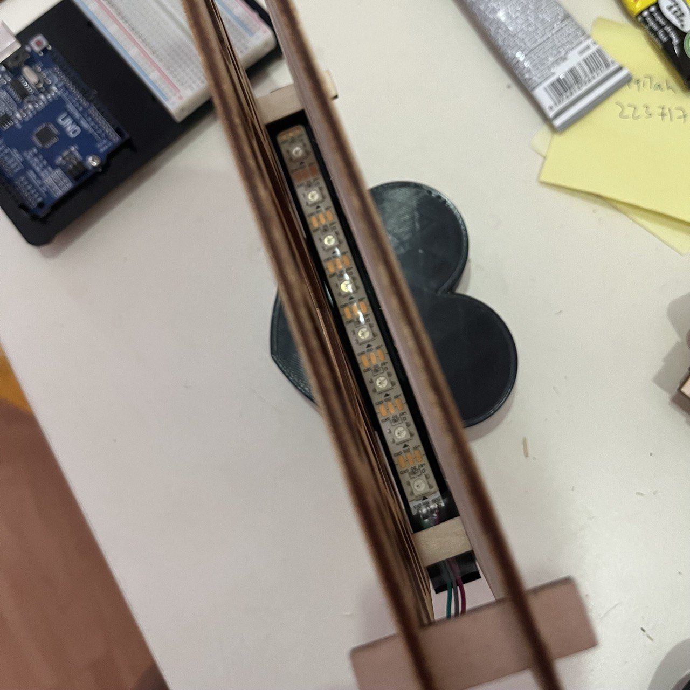
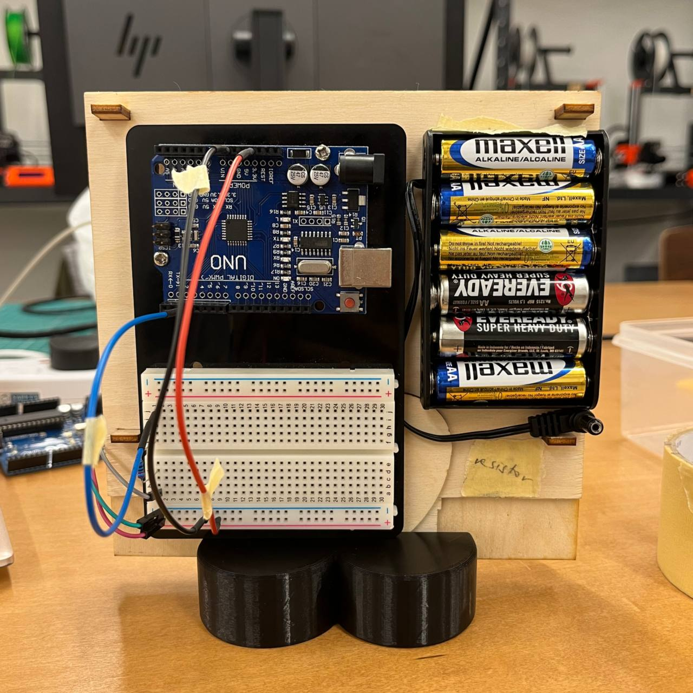

Lazer Cutting



To make a lamp that was to be suppported by the handphone stand, I had to create a sleek and thin design.
This goal was greatly aided by the LED strip that is the source of light in this project. I wanted to create some level of ambience with this lamp, so I cut out many hearts of various sizes on the fornt piece to allow light to pass through while lighting up the cutout design.
I measured a space for the LED strip to sit nicely between the front and back walls of the lamp to allow as much light to be emitted from this thin design.
For the placement of the Arduino breadboard and mirco-controller, as I had to return it after the project, I decided to place it behind the back wall. This helped the lamp to remain balanced on its stand while retaining the overall sleek essence of the lamp.
As for the power source, having it detatchable made the ambience lamp mobile and light which allowed it to be placed at any part of a room. At the same time, the user is able to decided to turn on the lamp for any duration of time the batteries allowed.